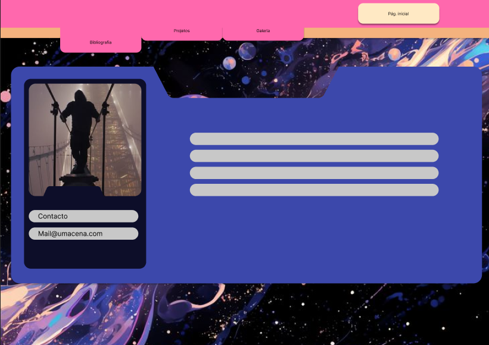
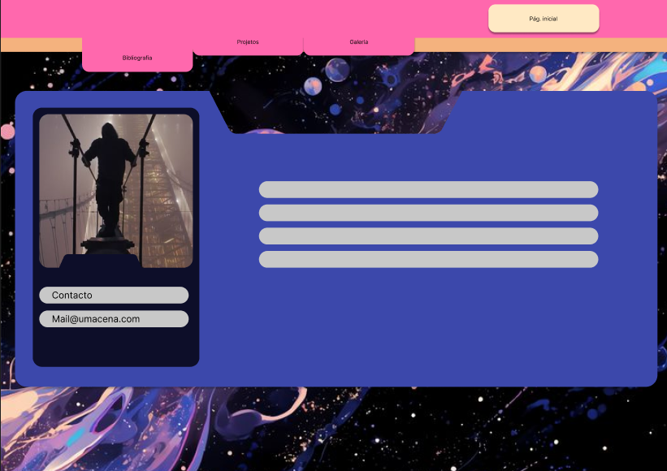
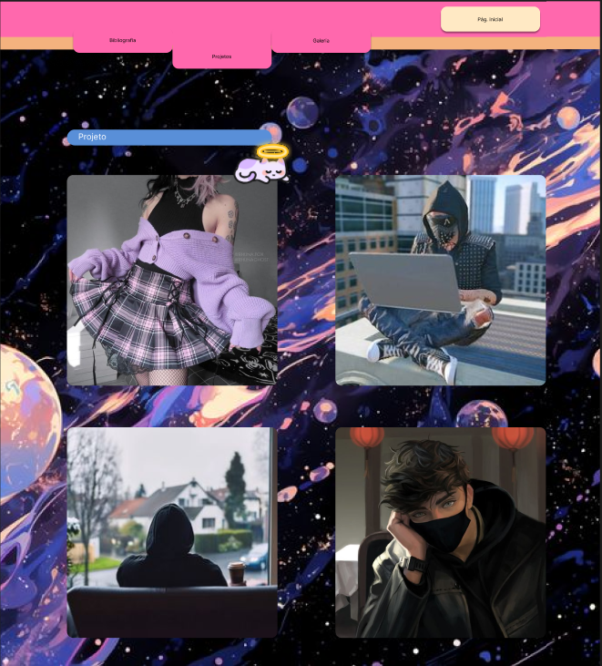
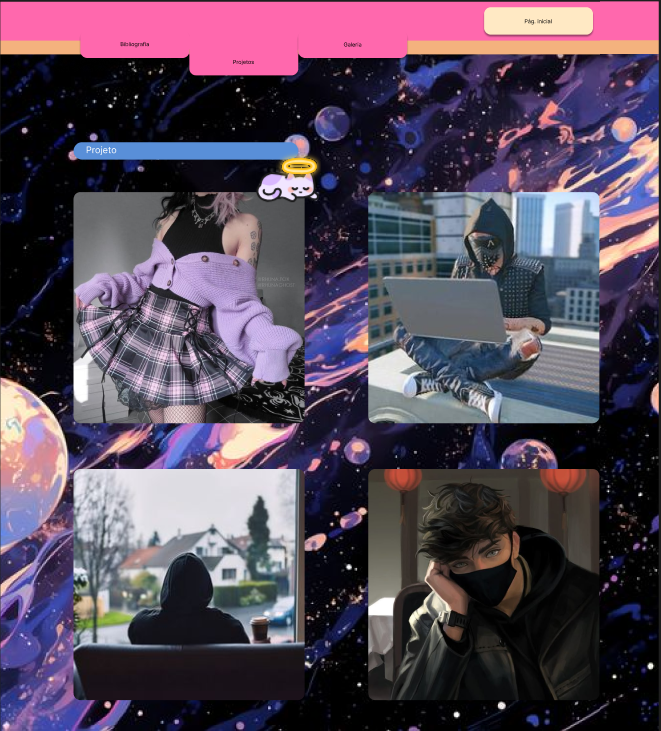

Projeto Careciver
Careciver foi um projeto que desenvolvi com a minha turma na faculdade, tratasse de uma aplicação para pessoas de idade ou cuidadores. A minha função foi criar algumas ilustrações para a aplicação.


Projeto Cão de apoio emocional em Portugal
Como alguêm com transtorno do espectro autista eu preciso do meu cão para realizar tarefas tão simples como sair de casa, mas Portugal ainda não tem grande variedade de cães de apoio, por isso existe alguma desinfurmação. Para sencibilizar as pessoas e infurmá-las sobre o cão de apoio emocional eu realizei várias ilustrações que sensibelizam para a causa.


Criação do site
Aqui está todo o processo por de tras da criação deste mesmo site


 

 
